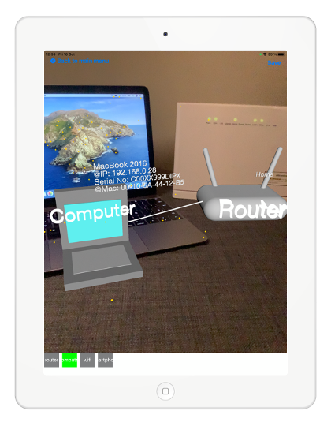

Domain-modelling using AR
Create and interact with models using mobile phones and augmented reality.
AlteR. An iOS modelling editor in 3D.
AlteR is an iOS application for creating models and interacting with them using augmented reality and iPhones or iPads. Our app gives you the opportunity to live a complete new modelling experience for any domain meta-model that you can imagine.

Demo. "A video is worth a thousand words!"
Because we do not have enough words to replace a real experience, we invite you to check our videos to see AlteR in action and discover its many features.
Article. Read more about our work.
We wrote about AlteR and provide this preprint entitled "Towards Domain-Specific Modelling Environments based on Augmented Reality" that has been accepted in the NIER track of ICSE 2021.